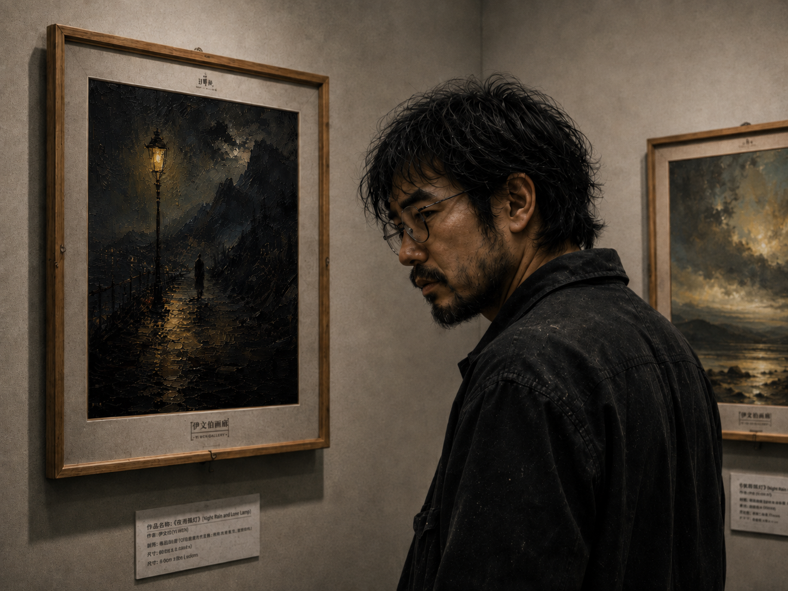

城市时报
CITY TIMES
文娱新闻 · A07
年轻画家阿禾涉嫌抄袭知名画家柳文清
画廊回应：将全面核查，坚决抵制抄袭行为

本报讯，知名画家柳文清近日在社交平台发文，指控年轻画家阿禾在其新作《雨后的第七盏灯》中大量抄袭自己的作品。相关帖文发布后迅速引发讨论，画廊、收藏者及艺术社群纷纷关注此事。
柳文清在帖文中表示，该作品在构图、色彩运用以及局部细节上与其多幅早期作品高度相似，并附上局部对比图作为说明。她称，原创作品需要被尊重，任何借由“学习”“致敬”包装的高度复制，都不应被行业轻轻放过。
负责展出相关作品的五度画廊随后发布声明，表示已注意到网络上的争议，并将启动内部核查程序。声明中提到，画廊已要求相关人员提交创作草稿、时间记录及作品登记资料，以确认作品来源与创作流程。
据本报了解，阿禾此前并非大众熟知的商业画家，其作品多以个人投稿、匿名展览及小型空间展出为主。争议发生后，其社交账号评论区涌入大量质疑留言，不少网友要求他公开完整创作记录，也有人认为在调查结果出炉前不宜过早定罪。
业内人士指出，艺术创作中的风格相近与实质抄袭之间，需要通过草稿、创作时间、修改痕迹与作者说明进行综合判断。若无法提供完整的创作链条，争议作品后续展售、署名与版权归属都可能受到影响。
截至发稿前，阿禾尚未对此事作出正式公开回应。画廊方面表示，调查期间不会对外公布未经核实的细节，但会在完成核查后向公众说明处理结果。
用户尚未订阅此报纸
已保存的评论
抄袭还敢碰瓷？真以为没人看过柳文清的画吗。那张对比图已经够明显了。
5-13 22:39 来自 Android小画手想红想疯了，碰瓷知名画师也太难看。画廊如果不处理，以后谁还敢投稿？
5-13 22:44 来自 iPhone如果有原始草稿，至少应该让调查看到完整时间线。现在最关键的是谁能拿出原始文件。
5-13 22:52 来自 微博网页版别只看截图。投稿邮件、文件创建时间、修改记录、展签登记，这些才是能说清楚的东西。
5-13 23:06 来自 Android柳文清那组画以前在小册子里见过，阿禾这张如果是后画的，确实解释不通。
5-13 23:14 来自 iPhone现在骂得太满也没意义。画廊既然说核查，就把核查范围和结果公开，不要只发一句声明。
5-13 23:27 来自 微博网页版